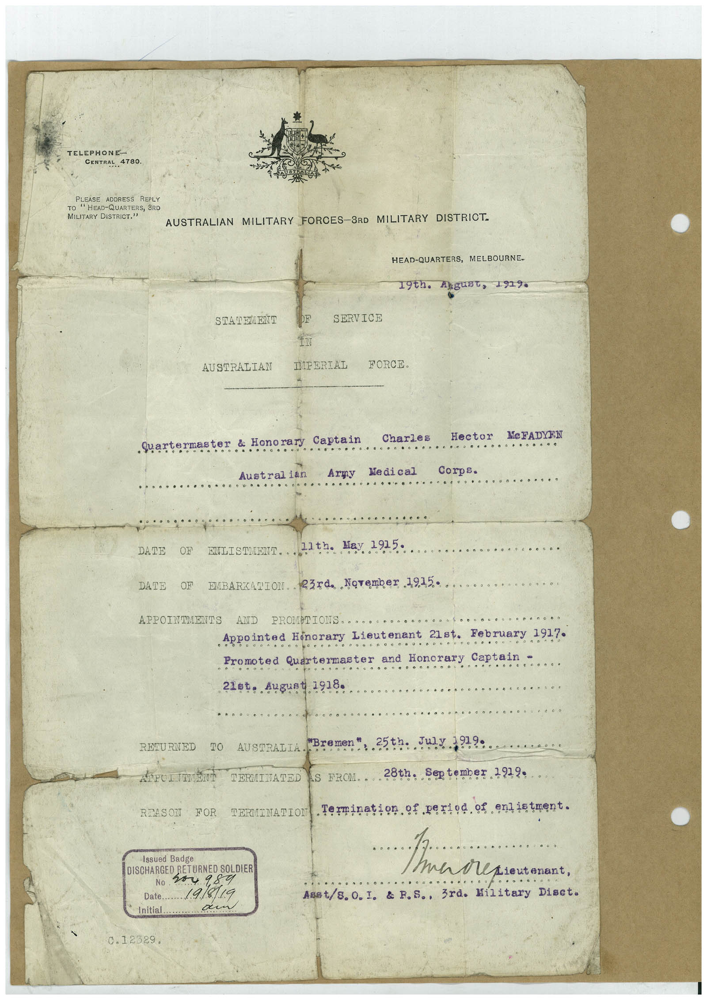

Book 1 · scan 073


Description
Transcription
Context
Review notes
Compare the machine draft with the scan. Handwriting and names need human review.
Artifacts
Edit the artifacts field in this note’s frontmatter to change these records. This summary is generated.
B01-S073-A01 — Typed document — Book 1, scan 073
Types: Typed document
Scope: Whole scanned page; individual items can be split out during review.
Caption: Not mapped yet.
Caption source: Not recorded yet.
Caption status: unmapped
Machine transcription
TELEPHONE- CENTRAL 4780 PLEASE ADDRESS REPLY TO " HEAD-QUARTERS, 3RD MILITARY DISTRICT." AUSTRALIAN MILITARY FORCES-3RD MILITARY DISTRICT. HEAD-QUARTERS, MELBOURNE- 1900. 4уg48t, 192% STATEMENT AUSTRALIAN SERVICE IPERIAL FORCE. Quartermaster & Honorary Austral ian Captain Army Charles Me di cal Hector Me FADYEN Corps. DATE OF ENLISTMENT 21th. Hay 1915- DATE OF EMBARKADION. R3rda Norember 1915• APPOINTMENTS AND PROMPTIONS. Appointed Honorary Lieutenant 21st. February 1917. Promoted Quartermaster and Honorary Captain - 21st. August 1918 RETURNED TO REASON FOR AUSTRALIA *Bremen . 25th. JW 3919• TERMINATED IS FROM. 28th.. September TERMINATION termination of period of enlietnent. Issued Badge DISCHARGED RETURNED SOLDIEF No v54 984 Date.. 19/8/19 Initial 0.12329. Lieutenant, Asst/8.0. I. & F.S., 3rd. Military Diact.